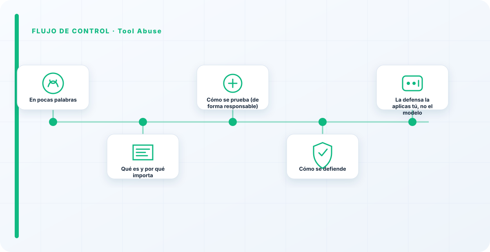
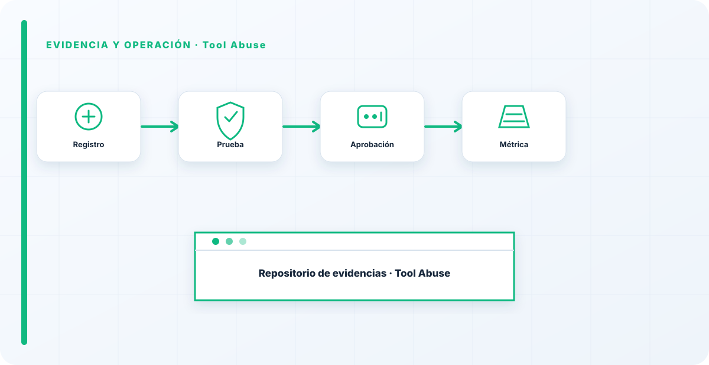

En pocas palabras
El tool abuse es el salto de lo hablado a lo hecho: conseguir que un agente use sus herramientas de forma no prevista o dañina. El red teaming aquí responde a la pregunta que quita el sueño con los agentes: si alguien secuestra al agente, ¿hasta dónde puede llegar con las herramientas que tiene a mano?
Qué es y por qué importa
Importa porque un agente con herramientas potentes es tan peligroso como amplio sea su alcance. Una inyección en un chatbot da una respuesta mala; la misma inyección en un agente con acceso a sistemas puede convertirse en acciones reales sobre tus datos y tu infraestructura.
El tool abuse es donde los riesgos abstractos del LLM se materializan en daño concreto y medible.
Cómo se prueba (de forma responsable)
El red team evalúa, con autorización y en entorno controlado, el alcance real de cada herramienta del agente: qué podría hacer si se le desvía, si hay confirmación humana en lo irreversible, si está aislado, y si sus permisos son realmente mínimos.
Se mide el "radio de explosión": suponiendo que el agente se comprometa, cuánto daño permitiría el diseño actual. El foco está en los privilegios, no en el modelo.

Cómo se defiende
La defensa es la que predica la arquitectura agéntica: mínimo privilegio por herramienta, confirmación humana en lo irreversible, aislamiento y trazabilidad de cada acción.
La prueba de tool abuse casi siempre confirma lo mismo: el daño posible es exactamente igual a los permisos concedidos. Recortarlos es, con diferencia, la defensa más eficaz y más barata.
La defensa la aplicas tú, no el modelo
Cuando pruebo tool abuse, no busco un fallo del modelo, busco un exceso de confianza en el diseño: herramientas potentes conectadas "porque sí", sin que nadie se preguntara qué pasa si el agente se tuerce. La mejor defensa no la aplica el modelo, la aplicas tú al decidir qué le dejas tocar. Un agente que solo puede hacer lo justo da un red teaming aburrido, y eso es exactamente lo que quieres: aburrimiento en la prueba es seguridad en producción.
El tool abuse no mide lo listo que es tu agente, mide lo imprudente que fuiste repartiéndole permisos. El radio de explosión lo dibujas tú al decidir qué le dejas tocar.
Los errores que veo una y otra vez
- Dar herramientas potentes sin pensar en el abuso.
- No poner confirmación humana en lo irreversible.
- Ejecutar el agente sin aislamiento.
- Permisos amplios "temporales".
- No medir el radio de explosión de cada herramienta.
Cómo lo llevaría a un entorno real
Cuando aterrizo tool abuse en una organización, no empiezo por comprar una herramienta ni por redactar veinte páginas. Empiezo por dibujar qué ocurre hoy: quién solicita el cambio, quién lo aprueba, qué sistemas intervienen, qué datos cruzan el proceso y quién se entera cuando algo falla. Ese dibujo suele descubrir más problemas que cualquier checklist. En AI Red Teaming, lo peligroso no es solo carecer de controles; también lo es creer que existen porque alguien los escribió una vez.
Después separo lo imprescindible de lo deseable. Lo imprescindible debe poder comprobarse: un responsable identificado, una regla clara, una evidencia fechada y un mecanismo para reaccionar. En este caso revisaría especialmente Tool, Abuse y responsable. No me vale una respuesta del tipo «lo gestiona el proveedor» o «eso lo mira seguridad». Necesito saber qué persona toma la decisión, con qué información y dentro de qué plazo.
La implantación debe crecer con el riesgo. Un piloto interno puede funcionar con una ficha breve y una revisión manual. Un sistema que afecta a clientes, empleados, dinero o información sensible necesita segregación de funciones, pruebas independientes, monitorización y un expediente mantenido. Mi criterio es sencillo: cuanto más difícil sea deshacer el daño, más fuerte debe ser la barrera antes de producción.
Decisiones que deben quedar por escrito
Hay decisiones que no deberían vivir en una reunión ni en un mensaje de chat. Para tool abuse dejaría documentados el alcance, los supuestos, los límites de uso, las excepciones aceptadas y las condiciones que obligan a detener o reevaluar. El documento no tiene que ser enorme, pero sí debe permitir que otra persona entienda por qué se hizo lo que se hizo.
También registraría quién puede cambiar control, quién valida evidencia y quién recibe las alertas relacionadas con Tool. Cuando esas tres responsabilidades se mezclan, aparece el clásico problema: el mismo equipo construye, aprueba y declara que todo funciona. No siempre se puede separar por completo, sobre todo en organizaciones pequeñas, pero al menos debe existir una revisión por alguien que no dependa del éxito inmediato del despliegue.
Las excepciones merecen un tratamiento propio. Una excepción sin fecha de caducidad acaba convirtiéndose en la arquitectura real. Por eso exigiría motivo, riesgo aceptado, responsable, compensaciones, fecha de revisión y criterio de cierre. Si falta uno de esos elementos, no es una excepción gestionada; es una deuda invisible.

Un ejemplo práctico
Imaginemos que un equipo quiere incorporar tool abuse a un servicio que ya está en producción. La propuesta promete reducir tiempos y automatizar tareas, pero utiliza componentes que cambian con frecuencia. Antes de aprobarlo, pediría una prueba limitada, un inventario de dependencias, un flujo de datos y una definición clara de qué acciones quedan fuera del alcance.
Durante la prueba recogería resultados normales y casos límite. No solo miraría si funciona; comprobaría qué ocurre cuando faltan datos, cambia una versión, se pierde conectividad, llega una entrada manipulada o un usuario intenta superar sus permisos. Ahí es donde se ve si el diseño aguanta. En muchas pruebas felices todo parece seguro porque nadie ha intentado romper la hipótesis de partida.
Si los resultados son aceptables, la salida a producción tendría condiciones: versión fijada, configuración aprobada, logs disponibles, responsables de guardia, procedimiento de rollback y revisión tras las primeras semanas. Si alguno de esos elementos no existe, prefiero retrasar el despliegue. Un día de demora suele ser más barato que investigar después un comportamiento que nadie puede reconstruir.
Qué evidencias guardaría
Para demostrar que el control funciona conservaría evidencias que cuenten una historia completa, no capturas sueltas. La historia debe enlazar necesidad, decisión, implementación, prueba y operación. En tool abuse eso incluye como mínimo la ficha del activo, el diagrama vigente, la configuración aprobada, el resultado de las pruebas y el registro de cambios.
No guardaría información por acumular. Si los logs contienen prompts, documentos, datos personales o secretos, aplicaría minimización, control de acceso y retención. La evidencia debe ayudar a investigar y auditar sin crear una segunda fuga de información. Es frecuente endurecer el sistema principal y dejar un repositorio de evidencias abierto a demasiadas personas.
- Propietario y finalidad de tool abuse, con fecha de revisión.
- Inventario de Tool, Abuse y dependencias asociadas.
- Criterios de aceptación y resultados sobre responsable y control.
- Configuración efectiva, versión y aprobación del cambio.
- Alertas, incidentes, excepciones y acciones correctivas cerradas.
Señales de que el control no está funcionando
El primer síntoma es que nadie sabe responder con rapidez quién es el responsable. El segundo es que la documentación describe una versión distinta de la que está operando. El tercero es que las alertas existen, pero llegan a un buzón que nadie revisa. Cuando aparecen esos tres síntomas, el problema no es tecnológico: el control se ha desconectado de la operación.
También desconfío de las métricas demasiado perfectas. Cero incidentes, cero excepciones y cien por cien de cumplimiento pueden significar excelencia, pero con frecuencia significan que no estamos mirando. Prefiero indicadores que enseñen tendencia: tiempo de corrección, antigüedad de excepciones, cobertura de pruebas, cambios sin revisión y reincidencias.
Por último, revisaría el comportamiento después de cada cambio significativo. En IA, una actualización de modelo, dataset, prompt, herramienta, permiso o proveedor puede alterar el riesgo sin cambiar el nombre del servicio. Si el proceso solo reevalúa cuando se crea un proyecto nuevo, se quedará ciego durante la mayor parte de la vida útil.
Mi criterio de cierre
Considero que tool abuse está razonablemente controlado cuando el equipo puede explicar el proceso sin depender de una sola persona, reconstruir una decisión con evidencias y detener el servicio sin improvisar. No busco perfección documental; busco que la organización pueda tomar decisiones repetibles bajo presión.
El cierre no consiste en marcar todas las casillas. Consiste en demostrar que los riesgos relevantes tienen propietario, que los controles se prueban y que las desviaciones producen una acción. Si la evidencia no cambia ninguna decisión, probablemente estamos generando burocracia. Si una decisión importante no deja evidencia, estamos creando fragilidad.
Este enfoque es el que intento mantener en toda CyberLibrary AI: explicar el control de forma que lo entienda negocio, pero con suficiente profundidad para que arquitectura, seguridad, auditoría y operaciones puedan aplicarlo de verdad.
Revisión periódica y mejora
No dejaría esta materia cerrada después de la primera implantación. Programaría una revisión basada en cambios y no únicamente en calendario. Una modificación de arquitectura, proveedor, dato, modelo, permiso o finalidad puede alterar el riesgo de tool abuse aunque el servicio conserve el mismo nombre.
En cada revisión compararía la situación real con el diseño aprobado, analizaría incidentes y casi incidentes, comprobaría las excepciones abiertas y preguntaría a las personas que operan el proceso. Son ellas quienes suelen detectar primero los atajos y las fricciones que no aparecen en un procedimiento.
El resultado debe acabar en decisiones concretas: mantener, reforzar, limitar, sustituir o retirar. Revisar sin decidir es simplemente volver a leer documentación. La mejora continua en AI Red Teaming debe poder verse en cambios de controles, responsabilidades, métricas o arquitectura.
Referencias y marcos relacionados
Contenido educativo y defensivo. Las pruebas de seguridad solo deben hacerse sobre sistemas propios o con autorización expresa.